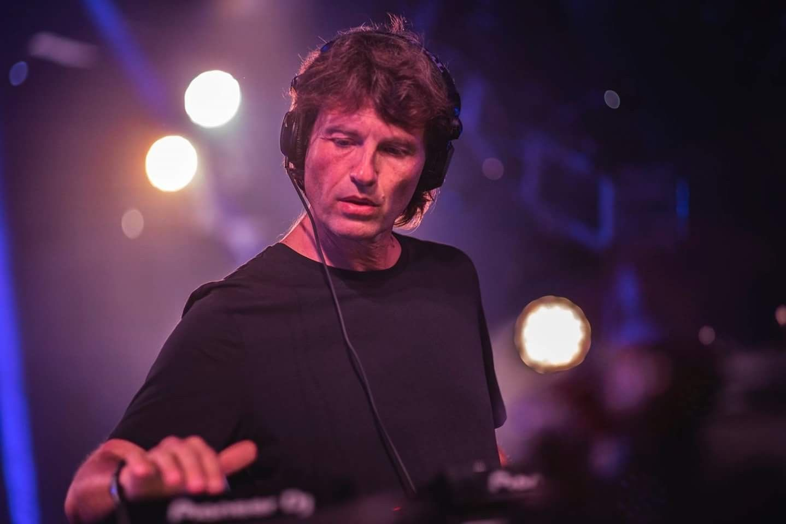

Biografia.

Hernán Cattaneo es un DJ y productor argentino, dedicado principalmente al Progressive House. Nació el 4 de marzo de 1965 en Caballito, Buenos Aires. Es considerado DJ residente del festival Creamfields Buenos Aires, ya que año tras año se hace presente en Cream Arena Stage. También fue uno de los DJ que más información participó del festival Moonpark, dándole inicio al mismo en marzo de 2003 junto a Sasha. Desde joven tuvo interés en bandas como Simply Red, Level 42, Depeche Mode y New Order. Según Cattaneo, Frankie Knuckles marcó gran influencia en su carrera como DJ y siente respeto y admiración por artistas y grupos como Knuckles, Inner City y Derrick May. Esto incentivó el rumbo artístico de Cattaneo, posicionándolo entre DJs muy reconocidos.
Su ultima presentacion en Cordoba, Argentina.